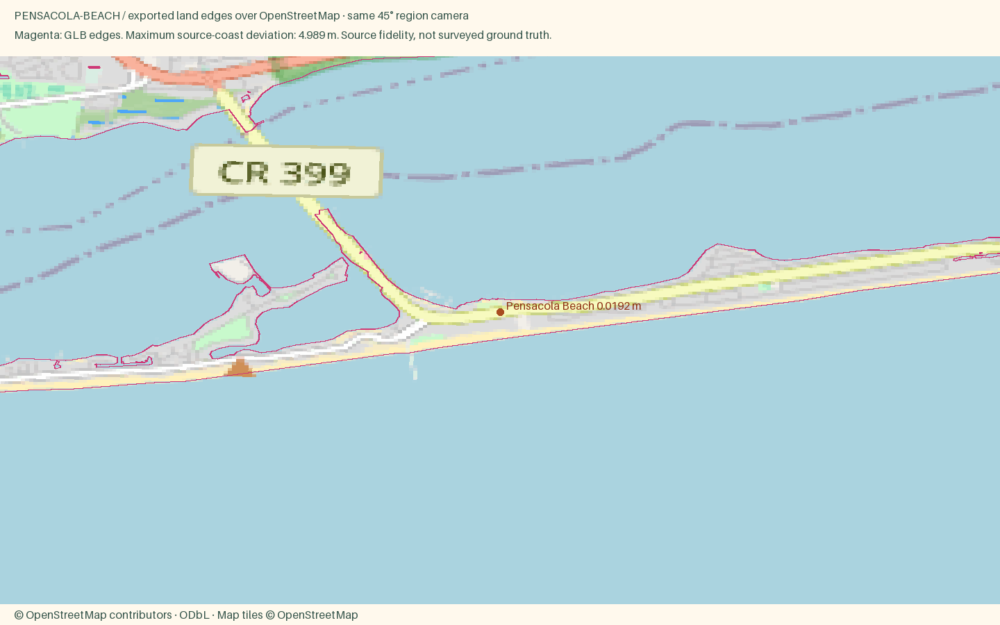
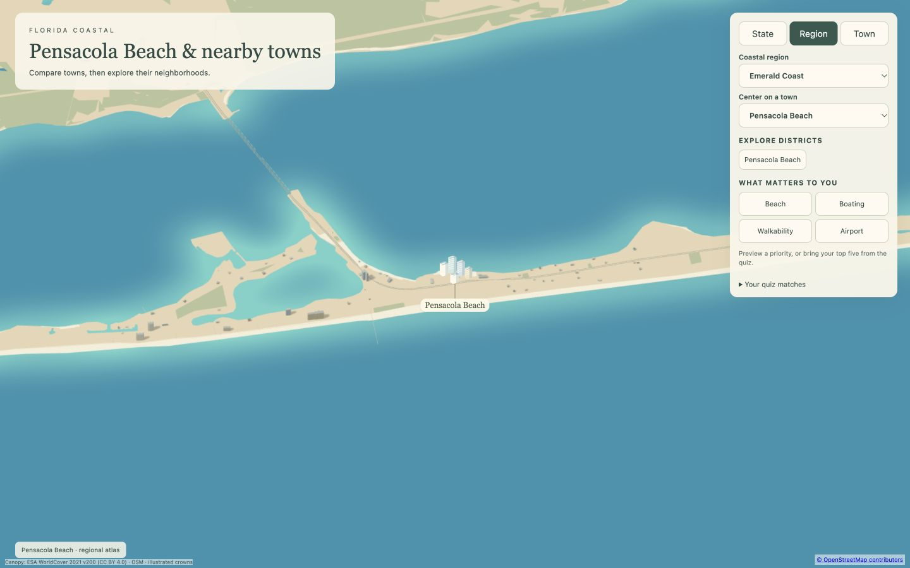
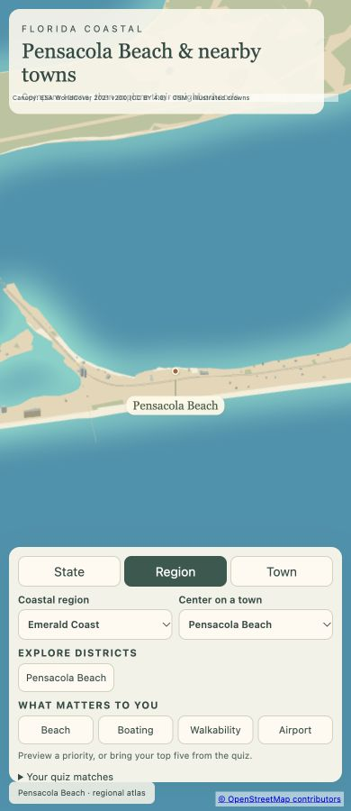

Pensacola Beach
Open atlas · Accuracy CSV · Sourced medians
Region
Pensacola Beach
Open districtA barrier island town on Santa Rosa Island, with sugar white sand and miles of protected national seashore on both sides.
Source alignment

Manual fixes
- City-specific package requested by user; other cities in the parent region remain unchanged.
- Vectorized the exact ESA 10m tree-class cells because this water-dominated barrier island has only 0.17% canopy in the full raster window; no new trees or density fallback added.
- Mapped the OSM pier walking-deck line into the existing elevated footway input, retaining its original coordinates.
- Added a sourced water-tower height and a stylized tank-and-stem profile using existing landmark recipe support.
- Input camera fitted to both geographic axes; Census background context extended to cover the wider region frame. Geometry and style implementation unchanged.
- Phone Region camera fitted within the verified coastal extent to avoid exposing the outer water-wash boundary.
Hero landing images
Desktop 1600 × 1000 · Phone 800 × 1000 · Source conflict audit

Responsive review


Price caveat: the published market-summary median has limited inventory (one reported active listing). It is not a robust island-wide valuation. The water-tower profile and palette are simplified within the existing landmark renderer.